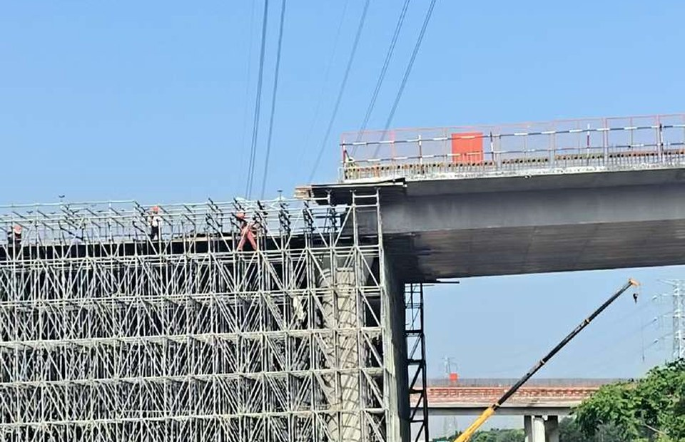

CORE MODEL / 双轮驱动
同一数字轴心，驱动
增效
与
提质
增效
提质
数据＋规则
人机协同轴心
TECHNICAL ARCHITECTURE / 技术架构
把业务经验变成机器可执行的流水线
数据底座
坐标·图层·照片
→
规则引擎
求交·缓冲·相似度
→
批量计算
全量筛选·候选召回
→
人工复核
专业判断·终审认定
→
闭环沉淀
清单·规则·方法
机器负责全量与速度，人员负责判断与责任。
ANONYMIZED DATA
全省杆塔脱敏演示
真实数据只用于省级汇总与密度建模；演示线路已匿名化、扰动和量化。
40.1万
杆塔台账
9217
线路
— 匿名线路
●
演示节点
不含经纬度、线路名、杆号
LINE × LINE
交叉跨越
包围盒预筛缩小范围，精确几何求交输出候选点，再由现场人员重点核验。
增效 · 线线求交
—
输电演示线路
—
铁路
●
程序候选交点
POINT → AREA
防鸟重点区域
鸟害样本密度聚类，剔除噪声点，以凸包收敛重点区域，再叠加线路批量筛查。
增效 · 聚类＋凸包
POINT × DISTANCE
集中燃放点
以燃放点生成N米缓冲区，批量圈选周边杆塔，将全量摸排转换为清单核验。
增效 · N米缓冲
ONE BASE · THREE RULES
三类规则共用一套坐标底座
线×线
交叉跨越
包围盒预筛
精确几何求交
点→面
防鸟
密度聚类
凸包重点区
点×距
燃放点
N米缓冲
周边杆塔筛查
QUALITY / 告警工单查重
从11.3万张照片收敛到287对真实重复
113,000 张告警工单照片
5,472 对 AI 候选
287 对人工认定
5.2%
候选命中率
pHash ＜ 10
CLIP ＞ 0.80
DUPLICATE REVIEW / 脱敏样本
构图高度一致，水印与身份信息已移除
A · 历史照片
B · 再次上传

SCALE BREAKTHROUGH / 规模突破
从少量特高压，扩展到
全电压等级
极少量
既有特高压筛查
→
1,245万
每月巡视照片
全电压等级
ALGORITHM / 查重算法
分层收敛候选空间，再把终审交给人
01
照片标准化
尺寸·方向·质量
02
pHash召回
汉明距离筛选
03
CLIP复核
语义向量相似度
04
批次归并
断点续算·去重
05
人工终审
业务规则认定
77.5万亿种理论组合经过逐层筛选，
最终只把高价值候选交给人工。
BEFORE / AFTER
数智协同把“人海作业”改造成两条闭环
维度
过去
现在
增效
人工全量摸排、逐段核对
机器批量计算、人员精准核验
提质
照片有限抽查、问题靠偶然发现
全量比对、候选复核、问题可追溯
能力
一次性任务、经验留在人脑
数据、规则、方法持续沉淀
机器承担重复劳动，专业判断回到关键环节。